13,312
Archived paired comparisons
208
Condition summaries
100
Classification-statistic rows
81
Historically recorded named tests
What the research measures
The initial experiments classify intact versus computationally rewired graph inputs from held-out spiking activity. Later experiments calculate the fraction of target-neuron firing positions changed after removing recorded molecular or RNA-derived graph connections. These are different outcome measures, not interchangeable folding or drug-prediction accuracies.
Source-derived figures
All figures below are the original publication charts from archived numerical records. Select a chart to open its source-derived PNG.
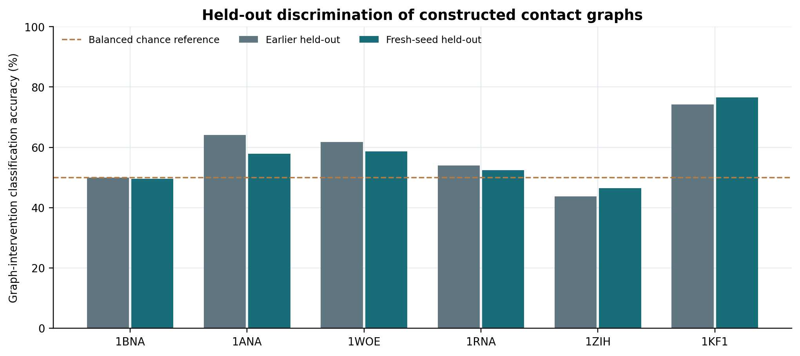
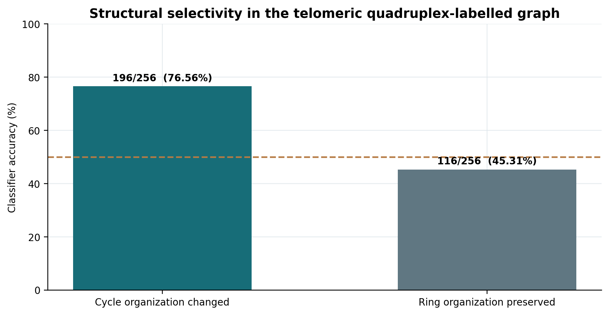
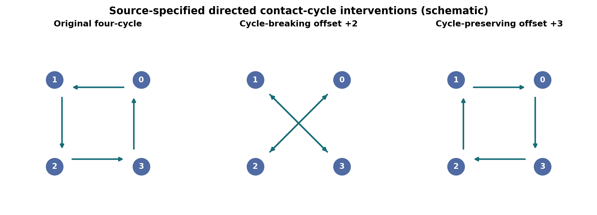
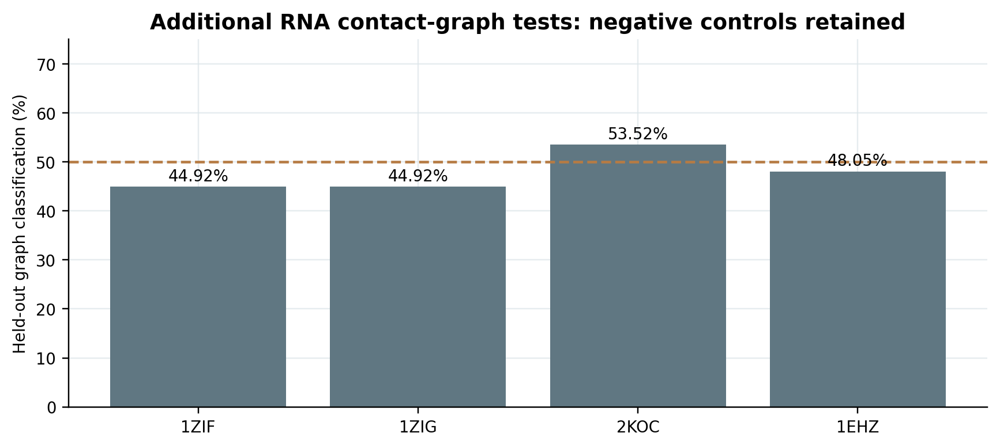
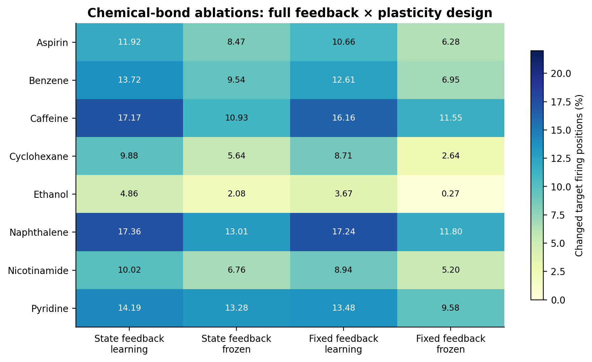
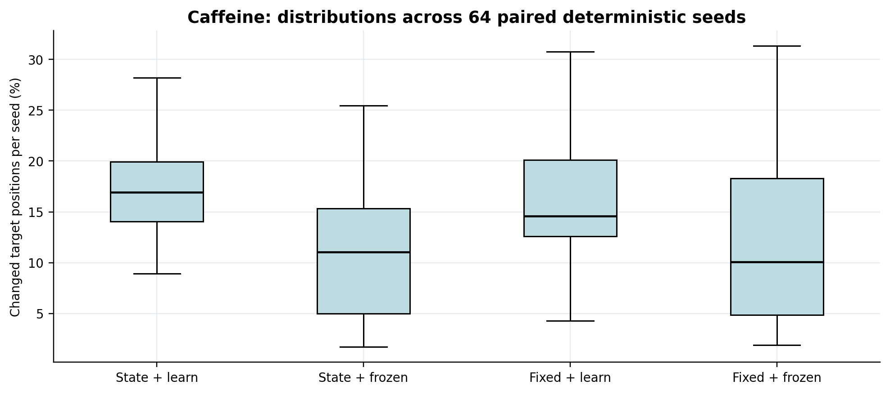
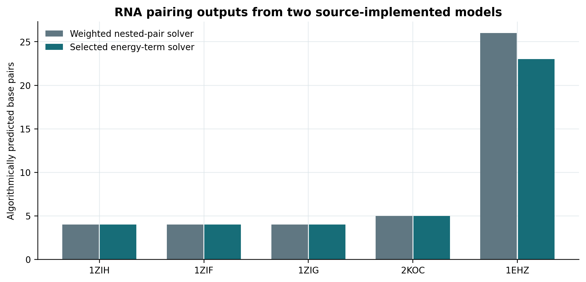
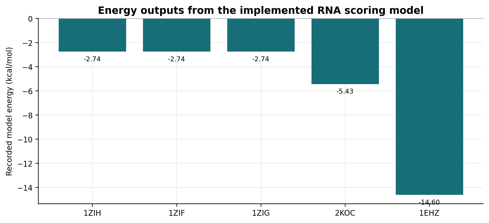
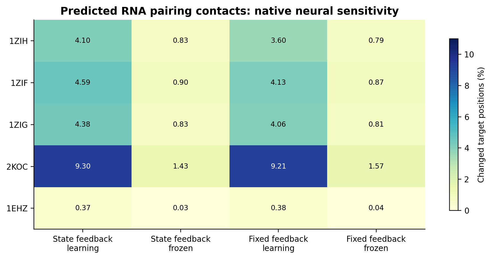
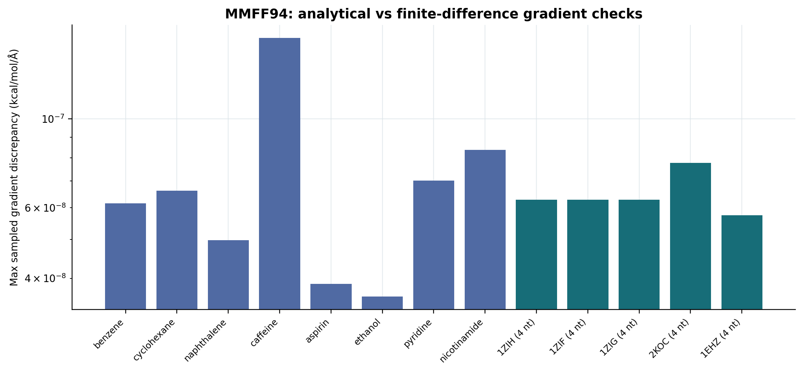
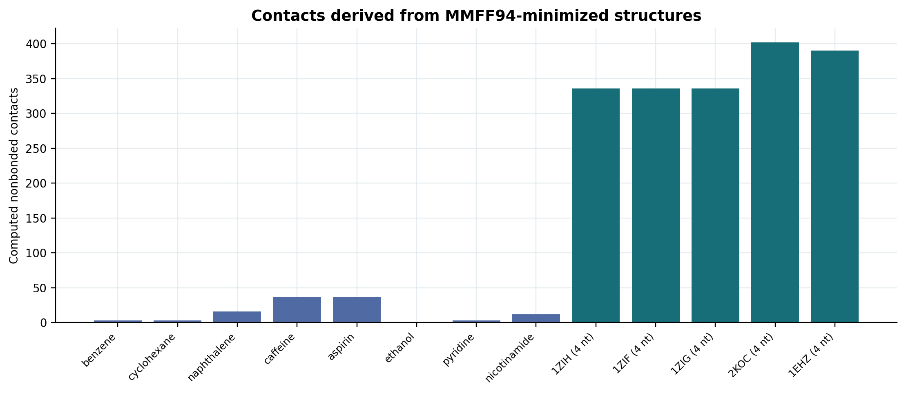
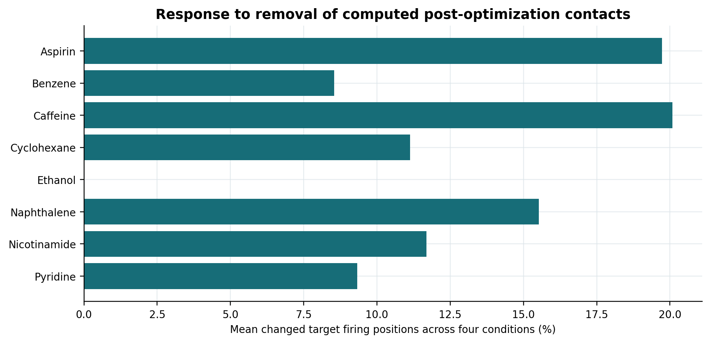
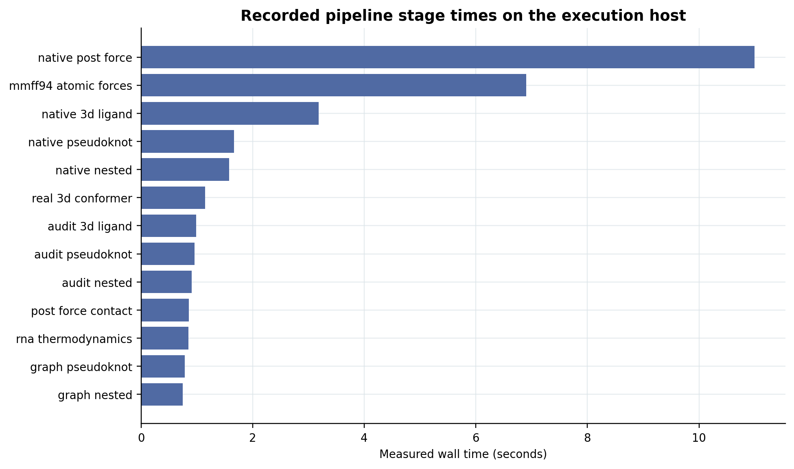
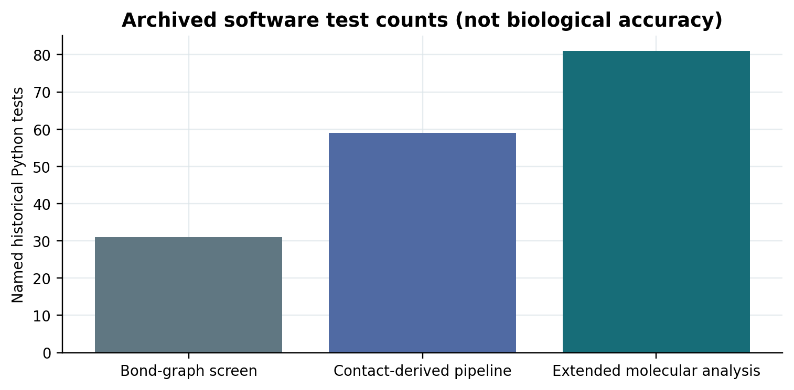
Documentation and independent review
Technical validation · Equations · Publication types · Original file provenance.